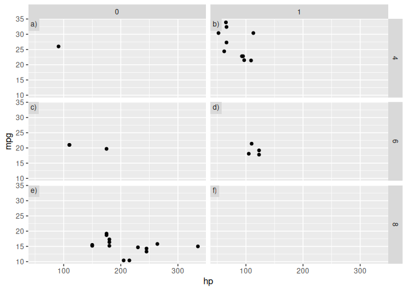
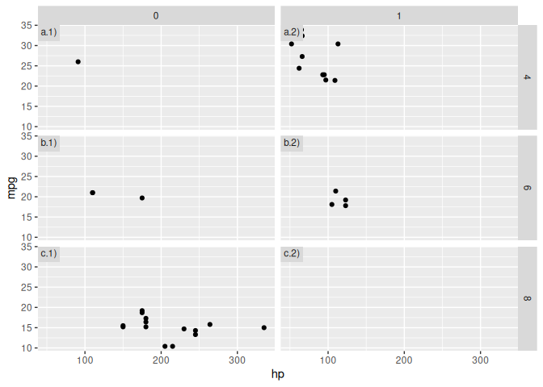

The goal of tagger is to easily add tags to facetted plots in order to identify panles.
Installation
You can install the development version from GitHub with:
# install.packages("devtools")
devtools::install_github("eliocamp/tagger")Example
In the default usage, you can simply add tag_facets() to add a tag to each panel of a ggplo2 plot.
library(tagger)
library(ggplot2)
ggplot(mtcars, aes(hp, mpg)) +
geom_point() +
facet_grid(cyl ~ vs) +
tag_facets()
If you want to tag rows and columns instead of each panel indivdually, you can set it with thetag argument.
ggplot(mtcars, aes(hp, mpg)) +
geom_point() +
facet_grid(cyl ~ vs) +
tag_facets(tag = "rc")